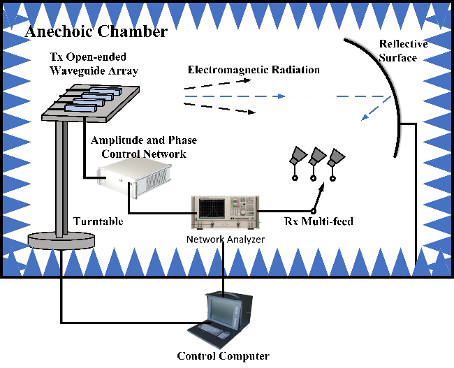
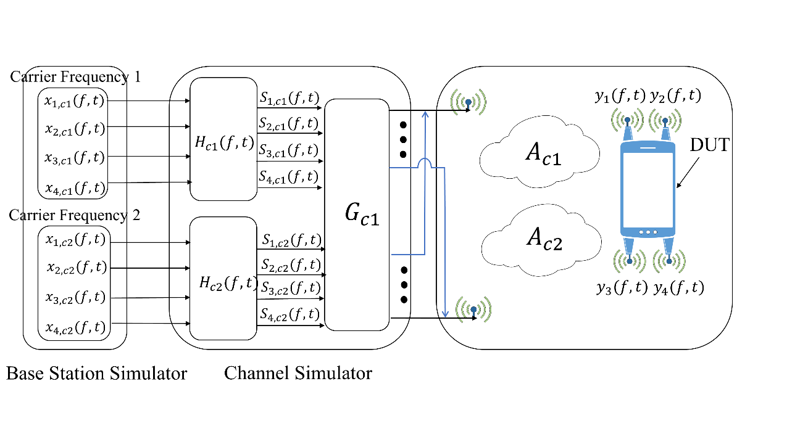
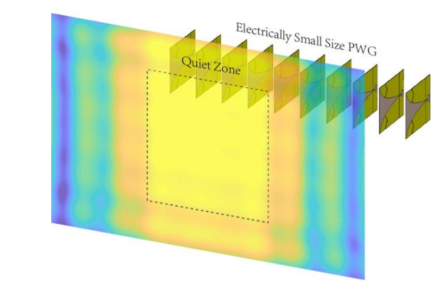
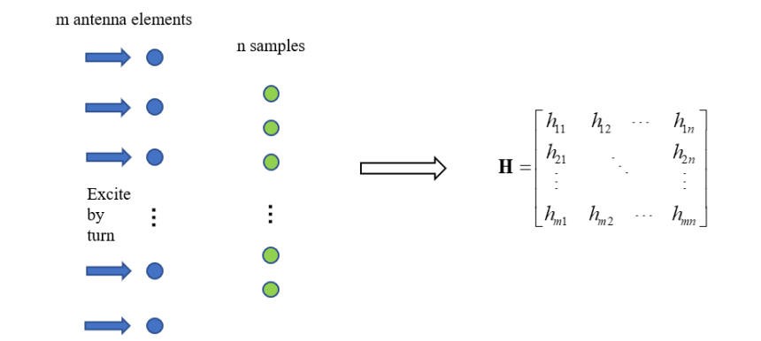

Master of Electronic Science and Technology
Beihang University (BUAA)
Contact:
Department of Electronic Science and Technology
Beihang University
XueYuan Road No.37, HaiDian District, BeiJing, China
Post: 100191
Phone: +86 18810892215
Fast Phased Array Calibration Method Based on Multiple Measuring Probes
Authors: Si Tang, Zhengpeng Wang
Conference: IEEE International Conference on Electronic Information and Communication Technology (ICEICT), 2020

Overview: The appropriate setting of multiple probes can effectively reduce the number of AUT’s amplitude and phase setting states and the times of measurement, saving measurement time and improving testing effectiveness. We simulated three typical system parameters and verified that this method can obtain a coefficient matrix with an optimal condition number, equal to 1.
This paper presents a fast phased array calibration method which significantly reduces the number of antennas under test (AUT) amplitude and phase setting states. Multiple measuring probes are introduced to record transmission coefficients as AUT works at different states. A coefficient matrix with a small condition number is constructed to calculate the initial excitation coefficients of each antenna element. Simulation results show that the coefficient matrix condition number can be reduced to 1 by optimizing the geometry of the measurement system. When the signal-to-noise ratio is higher than 18dB, the amplitude error of the calibration result is less than 0.5dB and the phase error is less than 20 degrees in the optimal conditional number configuration. This method effectively reduces the measurement time for the phased array calibration and improves the stability of the calibration system.
Analysis of Terminal 4 × 4 MIMO OTA Test System Using Carrier Aggregation Technology (in Chinese)
Authors: Tang Si, Wang Zhengpeng
Conference: National Conference on Microwave and Millimeter Waves (NCMMW), 2020

Overview:This paper focuses on the OTA testing of four-element MIMO channels, and establishes the simulation model based on MATLAB. The limitations of frequency spacing and matrix condition number on the isolation are also analyzed for the carrier aggregation technology that may be used in 5G large-scale MIMO, which will provide important reference for the design of future 5G OTA test systems.
This paper proposes an OTA (Over the Air) test method for terminal multiple-input multiple-output (MIMO) systems using carrier aggregation technology, analyzes the influence of the condition number of the propagation matrix and the center frequency spacing of the sub-carriers on carrier aggregation on measurement accuracy. The simulation results show that when the condition number of the propagation matrix is small, the system can still provide good isolation between the channels of the terminal even the sub-carrier center frequency spacing is relatively large. If the sub-carrier center frequency spacing is small, it allows a higher condition number for the transmission matrix between the probe and the terminal antenna. Typically, when the condition number is 5, the center frequency spacing of the subcarriers can reach 3%.
A Novel Ultra-Wideband Plane Wave Generator Antenna Array for OTA Test
Authors: Zhiyuan Yu, Zhengpeng Wang, Shiyao Zhu, Si Tang, and Yuanhua Tang
Conference: IEEE International Conference on Electronic Information and Communication Technology (ICEICT), 2021


Overview: We propose an ultra-wideband PWG to satisfy multi-mode test requirement. We also present a novel PWG excitations optimization method which can model the actual radiation situation more accurately than the traditional ideal point source method.
This paper presents an ultra-wideband one-dimension plane wave generator (PWG) antenna array. The electrical small wideband Vivaldi antenna elements are employed. Both the coupling and environment effect are involved in the proposed plane wave excitations optimization method. The theoretical bandwidth covers over 0.7GHz to 7GHz. The PWG generates plane wave whose amplitude variation is below ±1.45dB and phase variation is below ±10.5°in work frequency band by proposed method, which is better than the traditional optimization method results.
A Fast and Efficient Calibration Method for Phased Array Antennas using Fourier-Structured Excitation Matrix
Authors: Si Tang, Zhengpeng Wang, Chong Pan, Rui Su, Wei Fan, and Steven Gao
Journal: IEEE Transactions on Antennas and Propagation (TAP)
Overview: The proposed algorithm can significantly reduce the measurement time while maintaining the same calibration accuracy, which can be very valuable for future large-scale antenna systems.
This paper presents a novel phased array antenna calibration method. Unlike conventional phased array calibration methods equipped with only one probe antenna in the far-field setup, multiple measurement probes are introduced in the proposed algorithm to significantly improve the measurement efficiency. Specifically, a novel construction method for excitation matrix (which contains excitation coefficients for phased array elements) is proposed, where phase differences introduced by the spatial locations of the multiple probes are perfectly incorporated into the Fourier-structured excitation matrix, thereby improving the measurement accuracy and efficiency. The proposed method can offer robust array calibration results (guaranteed by the low condition number of the constructed excitation matrix with Fourier structure) and high measurement efficiency (offered by multi-probe setups). To experimentally validate the proposed algorithm, a multi-channel (i.e. multi-probe) far-field measurement setup realized by a compact antenna test range (CATR) with offset-focus multiple feeds was utilized, to save space and system cost. A four-element open-ended waveguide array operating at 24.95GHz and two-feed CATR systems were employed as the antenna under test (AUT) and multiple probes, respectively, to validate the effectiveness and robustness of the proposed phased array calibration algorithm. The proposed algorithm will be highly valuable for efficient phased array calibration, especially for future antenna systems equipped with large-scale antenna configuration.